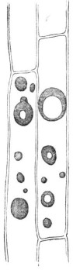
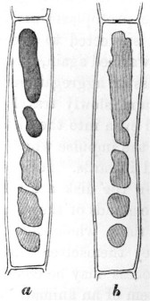
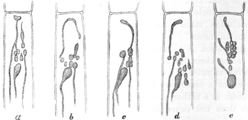

RECORD: Darwin, C. R. 1882. The action of carbonate of ammonia on chlorophyll bodies. Journal of the Linnean Society of London, (Botany) 19: 262-284, 3 text figures.
REVISION HISTORY: Scanned, OCRed and corrected by John van Wyhe 2003.
NOTE: X
[page] 262
The Action of Carbonate of Ammonia on Chlorophyll-Bodies.
By CHARLES DARWIN, LL.D., F.R.S.
[Read March, 6 1882.]
IN my 'Insectivorous Plants' I have described, under the term of aggregation, a phenomenon which has excited the surprise of all who have beheld it*. It is best exhibited in the tentacles or so-called glandular hairs of Drosera, when a minute particle of any solid substance, or a drop of almost any nitrogenous fluid, is placed on a gland. Under favourable circumstances the transparent purple fluid in the cells nearest to the gland becomes in a few seconds or minutes slightly turbid. Soon minute granules can be distinguished under a high power, which quickly coalesce or grow larger; and for many hours afterwards oval or globular, or curiously-shaped masses of a purple colour and of considerable size may be observed sending out processes or filaments, dividing, coalescing, and redividing in the most singular manner, until finally one or two solid spheres are formed which remain motionless. The moving masses include vacuoles which change their appearance. (I append here three figures of aggregated masses copied from my son Francis's paper†, showing the forms assumed.) After aggregation has been partially effected, the layer of protoplasm lining the walls of the cells may be seen with singular clearness flowing in great waves; and my son observed similarly flowing threads of protoplasm which connected together the grains of chlorophyll. After a time the minute colourless particles which are imbedded in the flowing protoplasm are drawn towards and unite with the aggregated masses; so that the protoplasm on the walls being now rendered quite transparent is no longer visible, though some is still present, and still flows, as may be inferred from the occasional transport of particles in the cell-sap. The granules withdrawn from the walls, together probably with some matter derived from the flowing protoplasm and from the cell-sap, often form a colourless, or very pale purple, well-defined layer of considerable thickness, which surrounds the previously aggregated and now generally
* Pfeffer, in his recent admirable work 'Pflanzenphysiologie' (B. ii. 1881, p. 248), speaks of the phenomenon as being in many respects interesting; and Cohn writes ("Die Pflanze," Vorträge aus dem Gebiete der Botanik, 1882, p. 361) in still stronger terms.
† Quart. Journ. Micr. Sci. vol. xvi. 1876, p. 309.
[page] 263
Fig. 1.

Fig. 1. Cells in a tentacle of Drosera rotundifolia, showing aggregated masses after the action of carbonate of ammonia. Some of the masses with vacuoles.
Fig. 2.

Fig. 2. Aggregated masses undergoing redissolution, b, same cell as a, but masses drawn at a later period.
Fig. 3.

a, b, c, d, e, the same cell drawn at successive short intervals of time, showing the aggregated masses produced by an infusion of raw meat. The changes of form occurred so rapidly that it was impossible to copy the appearance of the whole cell at a given moment.
spherical dark-purple masses. The surrounding layers or zones consist of solid matter, more brittle than the central parts of the aggregated masses, as could be seen when they were crushed beneath a cover-glass. It may be added that there is no à priori
[page] 264
improbability in some of the protoplasm being withdrawn, together with the imbedded granules, from the walls; for the whole of the protoplasm within the hairs of Tradescantia contracts, when subjected to great cold, into several spheres, and these, when warmed again, spread themselves out over the walls*.
The process of aggregation commences in the gland which is stimulated, and slowly travels down the whole length of the tentacle, and even into the disk of the leaf, but very much more slowly than the impulse which causes the basal part of the tentacle to bend inwards. It is a more interesting fact that when the glands on the disk are stimulated, they transmit some influence to the glands of the surrounding tentacles, which undergo throughout their whole length the process of aggregation, although they themselves have not been directly stimulated; and this process may be compared with a reflex action in the nervous system of an animal. After a few days the solid aggregated masses are redissolved. The
process of redissolution commences in the cells at the bases of the tentacles and travels slowly upwards; therefore in a reversed direction to that of aggregation. Considering that the aggregated masses are solid enough to be broken into fragments, their prompt redissolution is a surprising fact; and we are led to suspect that some ferment must be generated in the disk of the leaf, and be transmitted up the tentacles. The double process of aggregation and of redissolution takes place every time that a leaf of Drosera catches an insect.
Aggregation is a vital process—that is, it cannot occur in cells after their death. This was shown by waving leaves† for a few minutes in water at a temperature of 65.5° C. (150° F.), or even at a somewhat lower temperature, and then immersing them in a rather strong solution of carbonate of ammonia, which does not cause in this case any aggregation, although the most powerful of all known agents. If a tentacle is slightly crushed, so that many of the cells are ruptured, though they still retain much of their purple fluid contents, no aggregation occurs in them when they are similarly immersed, not-
* Van Tieghem, Traité de Botanique,' 1882, p. 596. See also p. 528, on masses of protoplasm floating freely within the cavities of cells. Sachs ('Physiologie Végétale,' p. 74) and Kühne ('Das Protoplasma,' p. 103) have likewise seen small freely-floating masses of protoplasm in the hairs of Tradescantia and Cucurbita which undergo amoeboid changes of form.
† 'Insectivorous Plants,'p. 58.
[page] 265
withstanding that in closely adjoining cells which have not been killed, as could be seen by the protoplasm still flowing round the walls, aggregation ensued. So that the process is quite arrested by the death of a cell, and it is much delayed if a leaf, before being immersed in the solution, is kept for some time in carbonic acid; and this agrees with the well-known fact that protoplasm retains its activity only as long as it is in an oxygenated condition. When tentacles, including recently aggregated masses, are suddenly killed or much injured by being dipped into hot water, or by being irrigated with alcohol, acetic acid, or a solution of iodine, the aggregated masses suddenly disintegrate and disappear, leaving only a little fine granular matter; but this disintegration does not occur with the more solid masses which have been aggregated for some time.
From the several foregoing considerations, from the aggregated masses being of an albuminoid nature (as shown by the tests employed by my son Francis, and as is admitted by Pfeffer*), and from their incessant, long-continued amoeba-like movements, I formerly concluded that not only these masses, but that the minute globules which first appear in the cell-sap consist, at least in part, of living and spontaneously moving protoplasm. And I feel compelled to adhere to my original conclusion, notwithstanding that such high authorities as Cohn and Pfeffer believe that the aggregated masses consist merely of condensed cell-sap. The movements of the masses, I presume, are considered by these botanists to be of the same nature as those curious ones described by Beneke as occurring in myelin when immersed in water and in a solution of sugar†.
From the doubts thus thrown upon my original conclusion, it seemed to me advisable to observe the action of carbonate of ammonia on grains of chlorophyll, as it is generally admitted that these consist of modified protoplasm. The grains not only change their positions under certain circumstances, which may be due merely to the movements of the streaming protoplasm in which they are imbedded, but they likewise have the power of changing their shapes, as has been recently proved by Stahl‡.
* 'Pflanzenphysiologie' Bd. ii. p. 248.
† 'Studien über das Vorkommen … von Gallenbestandtheil' (Giessen, 1862).
‡ See his interesting papers in the 'Botanische Zeitung,' 1880, pp. 298–413, and more especially p. 361.
[page] 266
They are also capable of self-division*. Now, if it can be shown that a solution of carbonate of ammonia tends to cause the grains of living chlorophyll to become confluent one with another and with previously aggregated masses, this fact would support the conclusion that the aggregated masses consist, at least in part, of living protoplasm, to which their incessant movements may be attributed. And it is the object of the present paper to show that chlorophyll-bodies are thus acted on in certain cases by carbonate of ammonia. The fact by itself possesses some little interest, independently of the light which it throws on the remarkable phenomenon of aggregation.
Dionaea muscipula.—The effects of carbonate of ammonia are best shown in the case of young, small, and thin leaves produced by starved plants, as these are quickly penetrated by the solution. Transverse sections of such leaves and of others were made before they had been immersed†; and the cells, including those of the epidermis, could easily be seen to be packed with grains of chlorophyll. It is, however, necessary to avoid examining a leaf which has ever caught an insect; for in this case many of the cells will be found filled with yellowish matter instead of with chlorophyll-grains. Several leaves were left for different lengths of time in solutions of different strengths; but it will suffice to describe a few cases. A small thin leaf was immersed for 24 hours in a solution of 7 parts of the carbonate to 1000 of water, and transverse sections were then examined. The cells near the margin of the leaf, throughout its whole thickness, did not now exhibit a single chlorophyll-grain, but in their place masses of transparent yellowish-green matter of the most diversified shapes. They resembled those of Drosera shown at fig. 3, if we suppose several of them to be pressed lightly together. Some of the masses in the same cell were connected by extremely fine threads. Spheres of more solid matter were sometimes included within the oddly-shaped greenish masses. The contrast in appearance between these sections and those taken from one corner of the same leaf before it had been immersed was wonderfully great. The sections were then clarified by being left for some time in alcohol, but not a grain of chlorophyll could be seen; whereas the fresh slices similarly clarified exhi-
* Van Tieghem, Traité de Botanique,' 1882, p. 493.
† These sections and many others were made for me by my son Francis, to whom I owe much information and other assistance.
[page] 267
bited with the utmost plainness the now colourless grains. The oddly-shaped green masses exhibited none of the movements so conspicuous in the case of
Drosera; but this could hardly have been expected after the injury caused by slicing; and the leaves are much too opaque to be examined without the aid of sections. Some other sections from the same immersed leaf presented a rather different appearance, as they contained much extremely fine granular green matter, which became pale brown after being kept in alcohol. No chlorophyll-grains could be seen in any of these sections. After adding iodine (dissolved in water with iodide of potassium), many particles of starch became visible by being coloured blue; but none were present in the first described section. Some of the larger rounded aggregated masses were coated with blue particles. Others were quite free of such particles, and were coloured by the iodine bright orange.
A superficial slice was taken from a fresh leaf, showing the upper epidermic and glandular surface, and all the cells abounded with large grains of chlorophyll. But with a leaf which had been immersed for 24 hours in a solution of carbonate of ammonia (7 to 1000), a similar section presented a wonderfully different aspect; no chlorophyll-grains could be seen. Some of the cells contained one or two transparent yellowish spheres, which, it could hardly be doubted, had been formed by the fusion of previously-existing chlorophyll-grains. Other cells contained very fine brownish granular matter, and this apparently had been deposited from the cell-sap with its colour changed. This granular matter was generally aggregated into one or two either separate or more or less confluent spherical balls, having a rough surface. Sometimes a dark-brown granular sphere was surrounded by a zone of paler granular matter. In other cases brown granular spheres lay in the centre of transparent yellow spheres. In one case a sphere of this latter kind, with two others consisting exclusively of the yellowish transparent matter, were observed in the same cell. In other cases the brown balls were surrounded merely by an extremely narrow border of transparent matter. It appears that in these cases the granular matter had first been deposited, and then had become more or less aggregated into balls; and that afterwards the yellowish transparent matter, formed by the fusion of the modified chlorophyll-grains, had aggregated either round the granular matter or into independent spherical and oddly-shaped masses.
[page] 268
Transverse sections of other immersed leaves presented various appearances. In one cell a central transparent sphere was surrounded by a halo of brown granular matter, and this again by a zone of the transparent matter, and such matter quite filled some adjoining cells. In the cells of another leaf there were, throughout its whole thickness, yellow, greenish, orange, pale or very dark-brown spheres. Some of these latter spheres had a dark centre, which was so hard that it was cracked by pressure, and the line of separation from the surrounding zone of paler matter was distinct. Two brown spheres were in one case included within the same transparent sphere. Gradations seemed to show that the opaque granular matter ultimately passed into dark-coloured transparent matter. In these same sections there were some colourless or yellowish highly-transparent small spheres, which, I believe, were merely much swollen chlorophyll-grains. One, two, or more of such grains, while still partly retaining their outlines, sometimes clung to the darker granular spheres. When there were only one or two of them thus clinging, they assumed the shapes of half- or quarter-moons. It appeared as if such swollen grains when completely confluent had often given rise to the pale zones surrounding the granular spheres. The pale zones were rendered still more transparent by acetic acid; and on one occasion they quite disappeared, after being left in the acid for 24 hours; but whether the matter was dissolved or had merely disintegrated was not ascertained. This acid produces the same effect on recently aggregated pale-coloured or almost colourless matter in the tentacles of Drosera.
In one leaf a good many unaltered chlorophyll-grains could still be distinguished in some of the cells; and this occurred more frequently in the thickest part of the leaf, near the midrib, than elsewhere. In one section the chlorophyll-grains had run together, and formed in some of the cells narrow green rims round all four walls. In many sections, more especially in those in which the process of aggregation had not been carried very far, there was much extremely fine granular matter, which did not resemble smashed or disintegrated chlorophyll-grains, such as may often be seen in sections of ordinary leaves. This granular matter occasionally passed into excessively minute, transparent, more or less confluent globules.
Judging from these several appearances, we may conclude that carbonate of ammonia first acts on the cell-sap, producing a gra-
[page] 269
nular deposit of a pale brownish colour, and that this tends to aggregate into balls; that afterwards the grains of chlorophyll are acted on, some swelling up and becoming completely confluent, so that no trace of their original structure is left, and others breaking up into extremely fine greenish granular matter, which appears likewise to undergo aggregation. The final result is the formation of balls of brown, and sometimes reddish, granular matter, often surrounded by zones, more or less thick, of yellowish or greenish, or almost colourless transparent matter. Or, again, spheres, ovals, and oddly-shaped masses are formed, consisting exclusively of this transparent yellowish-green matter. As soon as the process of aggregation has been thoroughly carried out, not a grain of chlorophyll can be seen.
Drosera rotundifolia.—It is advisable to select for observation pale reddish leaves, as the dark-red ones are too opaque; and the process of aggregation does not go on well in the small completely green leaves which may sometimes be found. The tentacles, which are merely delicate prolongations of the leaf, are from their transparency well fitted for observation. In sections of the disks of fresh leaves, the cells of the epidermis are seen to abound with grains of chlorophyll, as well as those of the underlying parenchyma. The bases of the exterior tentacles and the part immediately beneath the glands are generally coloured pale green from the presence of chlorophyll-grains in the parenchyma; and some occur throughout the whole length of the longer tentacles, but are not easily seen on account of the purple cell-sap. Sometimes the epidermal cells of the longer tentacles include chlorophyll-grains; but this is rather a rare event. The footstalks of the short tentacles on the disk are bright green, and invariably abound with grains of chlorophyll.
A pale leaf, in which the basal cells of the exterior tentacles contained numerous grains of chlorophyll, was left for 24 hours in a solution of only 2 parts of the carbonate to 1000 of water; and now innumerable greenish spheres, resembling oil in appearance, were present in these cells, and the ordinary chlorophyll-grains had in most places disappeared. Nevertheless in several cells some swollen grains were still distinct. Other cells contained fine granular or pulpy green matter collected into masses at one end. In a few other cells the chlorophyll-grains had run together, forming a continuous green rim with a sinuous outline attached to the walls. In fresh leaves the guard-cells of the
[page] 270
stomata include grains of chlorophyll; but these, after the leaf has been immersed in the carbonate, almost always become fused into a few nearly colourless spheres.
Sections made from leaves which had been left for 22 hours in a solution of 4 to 1000 exhibited, in the upper and lower epidermal cells of the disk, and in the cells of the parenchyma near the bases of the exterior tentacles, greenish spheres; and in such cells there were no chlorophyll-grains, but they were still present in some few of the epidermal cells which did not contain aggregated masses, and they abounded in the parenchyma in the middle of the disk, where there were only a few green spheres. These sections were irrigated with the solution of iodine, and the green spheres became yellow; and many minute elliptical particles of starch, coloured blue, could now be seen. Such particles were not visible in the sections of fresh leaves, and I believe that they had been imbedded within the chlorophyll-grains, from which the enveloping protoplasm had been withdrawn to form the green spheres.
One of the above leaves was left in the ammonia solution for three days, by which time it had become flaccid, being evidently killed. The numerous green spheres were blackened, but perfectly retained their outlines. No chlorophyll-grains could be seen, but many particles of starch. When leaves were left for some time in a solution of 7 to 1000, much pulpy green matter and innumerable spheres were sometimes formed, but no large aggregated masses; so that in these cases the solution appeared to have been too strong. The degree to which the grains of chlorophyll are acted on varies much from unknown causes; for in some tentacles, which exhibited strongly-marked aggregation after being left for 36 hours in the stronger solution, the grains could still be seen, but only after they had been cleared by immersion in acetic acid.
A leaf was laid on a glass plate kept in a damp chamber, and two or three tentacles at one end were covered with thin glass, so as to prevent their bending, and were irrigated with the ammonia solution of 7 to 1000. After 24 hours and 48 hours these tentacles included many dark-purple aggregated masses; nevertheless plenty of chlorophyll-grains were still visible. In the disk of this leaf, however, near the bases of these tentacles, there were some spheres of a fine green tint, and others purple in the centre surrounded by a distinctly defined green zone; and in
[page] 271
most of the cells containing these spheres not a grain of chlorophyll could be distinguished. That the green surrounding zones had been derived from the chlorophyll-grains is, I think, certain; for the purple colour of the central spheres showed that the cell-contents had not been originally green. Other cells in these same sections included irregularly-shaped masses of a purplish-green colour; and these were observed slowly to change their forms in the usual manner. When acetic acid was added to them, the green transparent spheres and the zones of similar green matter round the purple spheres instantly disappeared, either from being dissolved or, as seems more probable, from being killed and suddenly disintegrating. On another occasion boiling water and alcohol produced the same effect on the spheres. Tentacles still retaining their chlorophyll-grains, but with many very pale-coloured homogeneous aggregated masses (which were seen in movement), were irrigated with acetic acid; and it was curious to observe how instantaneously they became filled with small transparent spheres. In a short time, however, the outlines of the larger masses were alone left; then these disappeared, and finally the small enclosed spheres. On the other hand, some dark-coloured solid aggregated spherical masses did not disappear when left for 24 hours in acetic acid.
The effect of the ammonia solution (4 and 7 to 1000) on the epidermal cells of the upper surface of the disk was now more especially observed. In some cases all these cells which, as already stated, invariably contain many chlorophyll-grains, included after immersion in the solution only a single or several green transparent spheres; but more commonly the spheres were very dark purple or brown. Sometimes a central sphere, which was so solid that it could be cracked, was surrounded by a well-defined paler zone. Numerous gradations could be traced, showing that several small spheres and irregularly shaped globules often coalesce, and thus form the larger rounded masses. It was repeatedly observed that when the epidermal cells contained only one or two large spheres, not a single grain of chlorophyll could be seen. It is surprising that dark purple or brown or almost black spheres should be formed in the epidermal cells of green leaves; for before immersion the cell-contents were colourless, with the exception of the chlorophyll-grains; but the fact is less surprising when it is known that these cells turn more or less red as they grow old if they are exposed to a
[page] 272
bright light. In some of these leaves the basal cells of the longer exterior tentacles had become beautifully transparent from the aggregation of their contents into green or greenish-purple masses; and here no chlorophyll-grains could be seen; but in other parts of the same tentacles, where the aggregated masses were of a purple tint, the chlorophyll-grains were still plainly visible.
Finally, it appears certain that in the leaves of Drosera the grains of chlorophyll, if left long enough in a weak solution of the carbonate, sometimes break up and form translucent greenish globules, which are much smaller than the original chlorophyll-grains; and that these, by coalescing, form larger masses, which again coalesce into a few spheres or into a single one. In other cases the chlorophyll-grains swell and coalesce without having previously broken up into globules. During these various changes the aggregated masses often become coloured by the modified cell-sap, more especially in the case of the epidermal cells; or they may form a zone round the already aggregated cell-sap, in which case a dark central sphere is surrounded by a less dark or by a light-green transparent zone of matter.
It remains to be considered whether the grains of chlorophyll, after complete fusion or aggregation, are ever reformed and reassume their normal positions on the walls of the cells. Although the purple aggregated masses within the tentacles are soon redissolved, the cells becoming refilled with transparent purple fluid, it by no means follows that the chlorophyll-grains should be reformed; and such a capacity would be an interesting point. To ascertain whether this occurred, drops of a weak solution of carbonate of ammonia (2 to 1000) were daily placed during 5 days on several leaves on a growing plant; but, to my surprise, the tentacles remained after the first day expanded, with their glands bright red and copiously secreting, and they exhibited little aggregation. Large drops of a solution of 4 to 1000 were next placed on three reddish leaves, fresh drops being added in about 18 hours. After an interval of 41 1/2 hours from the time when the drops were first placed on the leaves, three short central tentacles on one leaf were examined, and the cells were seen to be filled with quickly moving aggregated masses, and not one grain of chlorophyll could be distinguished. In 66 hours after the drops had been given the leaves were well syringed with water; and now the central tentacles of a second leaf were examined, in
[page] 273
which there was much aggregated matter and no chlorophyll-grains. A third leaf was examined 5 days after the drops had been given, and the aggregated masses appeared to be breaking up into small highly transparent spheres. In two, however, of the short central tentacles of this leaf the cells at their bases contained no aggregated matter and plenty of chlorophyll-grains. It is probable that if these tentacles had been examined two or three days earlier, an opposite state of things would have prevailed. In a third central tentacle from this same leaf there was still much aggregated matter in the basal cells; and here a few irregularly shaped chlorophyll-grains could be seen. In other tentacles from this same leaf, and from two other leaves which had been similarly treated, some of the aggregated masses had become granular, discoloured, and opaque; and this indicates that the solution had either been too strong, or that too large a quantity had been given.
Drops of a strong filtered solution of raw meat were now placed on 7 reddish leaves, the tentacles of which all became much inflected and their glands blackened. After 22 1/2 hours they were syringed with water, and one leaf was cut off for examination. The contents of five short central tentacles from this leaf were aggregated down to their bases, and not a grain of chlorophyll could be seen. Some of the aggregated masses were almost white with a faint tinge of green, and were moving quickly. In the long exterior tentacles which had not at first been touched by the infusion (that is, not until they had become inflected), the aggregation had not as yet travelled down to the basal cells; and here the grains of chlorophyll were quite distinct. The infusion was too strong; for after five days one out of the six remaining leaves was dead; two others were much injured, with the outer tentacles killed, those on the disk, though immersed for a longer time, being still alive; the fourth leaf was considerably injured; the fifth and sixth looked fresh and vigorous, with their glands, now of a red colour, secreting freely. Five of the short central tentacles from one of these latter leaves were now (i.e. after the five days) examined: in three of them only a trace of aggregation was left, and plenty of chlorophyll-grains could be seen; in a fourth tentacle there were still some aggregated masses and a few chlorophyll-grains; in a fifth there were many aggregated masses and some fine granular matter, and here no chlorophyll-grains were distinguishable. There can
[page] 274
hardly be a doubt that in four out of these five tentacles the chlorophyll-grains had been reformed. On one of the much-injured leaves, in which the glands of the central tentacles were still opaque, the cells in their footstalks contained some aggregated and some brownish granular matter; and here minute globules were arranged along the walls of the cells in the places where chlorophyll-grains ought to have stood; but whether these were remnants which had never wholly disappeared or new grains reforming could not be ascertained. Drops of a weaker infusion of raw meat were next placed on seven reddish leaves, which were all greatly acted on; but the infusion was still rather too strong. In from 24 to 25 hours afterwards all the leaves were well syringed; and small pieces having been cut off two of them, several of the short central tentacles were examined. In one of these leaves a very few chlorophyll-grains could be seen in some few cells in one of the tentacles which had not undergone so much aggregation as the others. In the piece from the second leaf not a single chlorophyll-grain could be distinguished in any of the short central tentacles. The sections were then immersed in alcohol, and in a few minutes all the aggregated masses were broken up into very fine granular matter; but no chlorophyll-grains could be seen, except in the one tentacle above mentioned. In three days after the drops had been first given, four of the leaves (including one of those from which a small piece had been cut off) looked vigorous, and were fully or almost fully expanded. The fifth leaf, from which a piece had likewise been cut off, appeared somewhat injured. The sixth had its tentacles still inflected and seemed much injured, and was apparently almost dead.
Four of the central tentacles on the vigorous leaf, from which a piece had been cut off, after 24 hours, were now (i.e. on the third day after the drop had been given) examined. In most of the basal cells of three of these tentacles only a trace of aggregation was left, and many chlorophyll-grains could be seen in them; but these were not so regular in shape or so regularly placed as are the normal grains; so that I presume they were in the act of reforming. Two basal cells in one of these tentacles still contained large quickly moving aggregated masses, and not a grain of chlorophyll could be distinguished in them. When this section was irrigated with the solution of iodine, the aggregated masses in the two just-mentioned cells instantly broke up
[page] 275
into brownish granular matter, and the irregular and, as I supposed, just reformed chlorophyll-grains in the adjoining cells ran together and became confluent, forming narrow rims along the walls.
After intervals of 4, 6, and 8 days from the time when the drops were given, 15 central tentacles on three of the leaves were examined; and in all of these tentacles, excepting one in which there was still much aggregated matter, chlorophyll-grains could be seen. After 11 days one of the leaves, from which a small piece had been cut off after an interval of 24 hours, and in which most of the central tentacles then included no chlorophyll-grains, was now reexamined. The central tentacles appeared perfectly healthy and were secreting: in 8 out of 10 of them, the cells included chlorophyll-grains having the usual appearance; in the other two tentacles there was still much aggregated matter and no ordinary chlorophyll-grains, but some few irregularly shaped chlorophyll-grains. With respect to the second leaf, from which a small piece had been cut off, and in which the central tentacles did not then (i.e. after 24 hours) contain a single chlorophyll-grain, only a very few of the central tentacles now (i.e. after 11 days) appeared healthy; but in two of them, which appeared quite uninjured, there were innumerable perfect chlorophyll-grains in all the cells from the glands down to the base.
Considering the whole of the evidence here given, there can hardly be a doubt that with the leaves of Drosera as soon as the aggregated masses break up, and even before they are wholly redissolved, grains of chlorophyll are reformed.
Drosophyllum lusitanicum.—The footstalks of the tentacles are bright green, from the large number of chlorophyll-grains which they contain. Two leaves were immersed in a solution of carbonate of ammonia (4 to 1000) for 23 and 24 hours, and the cells of the footstalks now contained innumerable spheres, some much smaller and some much larger than the grains of chlorophyll, and other oddly shaped masses, more or less confluent, of translucent bright-yellow matter, which, when irrigated with alcohol, instantly broke up into fine granular matter. I looked in vain in several of these tentacles for grains of chlorophyll. Another leaf was immersed for only 16 1/2 hours in a weaker solution of 2 to 1000; but this sufficed to produce an abundance of yellow translucent bodies, which were seen to change their forms greatly,
[page] 276
though slowly. In many, but not in all, of the cells of this leaf the grains of chlorophyll were still quite distinct. The several leaves were left both in the stronger and weaker solutions for 48 hours; and this caused the yellow spheres and masses to disintegrate into brownish granular matter. In this respect the aggregated masses in Drosophyllum differ from those in Drosera and Dionaea. Leaves were also left for 24 and 48 hours in an infusion of raw meat; but no yellow aggregated masses were thus produced, and the grains of chlorophyll remained perfectly distinct. This singular difference in the action of the infusion of raw meat on the tentacles, as compared with those of Drosera, may perhaps be accounted for by their serving in Drosophyllum almost exclusively for the secretion of the viscid fluid by which insects are captured—the power of digestion and of absorption being chiefly confined, as I have explained in my 'Insectivorous Plants' (pp. 332–342), to the minute sessile glands on the disks of the leaves.
As in the three foregoing genera the grains of chlorophyll tend to aggregate into moving masses under the long-continued influence of a weak solution of carbonate of ammonia, I thought that the grains would probably be similarly acted on in all insectivorous plants; but this did not prove to be the case. The immersion of leaves of the common Pinguicula in a solution of the ammonia and in an infusion of raw meat did not cause any aggregation of the chlorophyll-grains, though numerous transparent spheres were formed within the glandular hairs. Again, the immersion in carbonate of ammonia of pieces of young and old pitchers of a Nepenthes (garden hybrid variety) caused the appearance of innumerable more or less confluent spheres of various sizes in the glands on the inner surface of the pitcher and in the exterior epidermal cells. These were formed of translucent matter, either almost colourless or of a brown, orange, purple, or greenish tint; but the grains of chlorophyll were not acted on.
Sarracenia purpurea.—The pitchers of this plant are evidently adapted for catching and drowning insects; but whether they can digest them, or may have the power of absorbing matter from their decaying remains, is doubtful*. Many observations
* See an interesting account of the inner epidermal cells by A. Batalin, 'Ueber die Function der Epidermis in den Schläuchen von Sarracenia &c.' 1880. Reprinted from 'Acta Horti Petropolitani, ' t. vii. (1880).
[page] 277
were made; but one case will suffice. A piece of a pitcher was left for 24 hours in a solution of 4 parts of the carbonate of ammonia to 1000 of water, and for 24 additional hours in a solution of 7 to 1000. In the cells of the parenchyma, especially in those close to the vascular bundles, there were many spheres and aggregated masses of bright orange transparent matter. Spheres of the same and of various other tints were present in the epidermal cells, more especially in those on the inner surface of the pitcher; and some of these spheres were of exactly the same pale greenish colour as the swollen chlorophyll-grains which were still present in some places, being often collected together into rounded masses. In many of the epidermal cells which contained spheres no chlorophyll-grains could be seen, though they were abundantly present in the epidermis of fresh leaves; and it is this fact which chiefly leads me to believe that the chlorophyll-grains sometimes become so completely fused together as to form spheres, being often blended with the aggregated and coloured cell-sap. When a solution of iodine was added to these sections, the pale-coloured spheres and irregularly shaped aggregated masses became bright orange, and they were sometimes sprinkled over with blue particles of starch. The iodine did not cause their immediate disintegration and disappearance, nor did alcohol or acetic acid. In this respect they differ from the recently aggregated masses in Drosera; though in this latter plant the older and more solid aggregated masses are not acted on by these reagents. Many of the cells contained green granular matter, formed either by the chlorophyll-grains having been mechanically smashed or by their disintegration; and acetic acid sometimes caused this granular matter to change instantly into the same orange tint as that of the aggregated masses.
The orange spheres and variously shaped masses were seen in many sections of pitchers which had been exposed for different lengths of time to solutions of the carbonate of different strengths; and in many of them swollen grains of chlorophyll had become more or less confluent. The original nature of the latter could be recognized by the sinuous outlines and greenish tint. They were not seen to change their shapes spontaneously; but this could not have been expected in sections. Portions of a pitcher left in distilled water for nearly three days did not exhibit a single orange sphere or aggregated mass; but there were some colourless oil-globules which were dissolved by alcohol;
[page] 278
and the chlorophyll-grains, though generally much swollen, were still distinct. It may therefore be concluded that in Sarracenia the chlorophyll-grains often undergo aggregation under the influence of carbonate of ammonia, but that they are less easily acted on than those of Dionaea and Drosera.
Leaves with Glandular Hairs and Other Leaves.—I had formerly observed, as described in my 'Insectivorous Plants/ that the glandular hairs of some plants absorb carbonate of ammonia and animal matter, and that aggregation is thus caused in them. Consequently such leaves and others without hairs were immersed in solutions of carbonate of ammonia (4 and 7 to 1000) generally for 24 hours. No marked effect was produced on the chlorophyll-grains, excepting their occasional displacement, in the following cases (plants were selected almost by hazard, but which belong to different families):—first, of leaves not bearing many or any glandular hairs, namely those of Brassica, Fumaria, Fuchsia, Robinia, Oxalis, Tropaeolum, Euphorbia, Stapelia, Beta, Allium, Lemna, a fern (Nephrodium), a Marchantia, and a moss. Nor were the grains acted on in two species of Saxifraga (except on one occasion, when they formed masses shaped like a horseshoe, presently to be described), nor in Primula sinensis—although the leaves of these three species are clothed with glandular hairs, which absorb carbonate of ammonia and undergo aggregation. Young leaves of Dipsacus sylvestris were immersed for 24 hours in a solution of 7 to 1000, and large yellowish highly refracting spheres were formed in the upper epidermic cells which do not include any chlorophyll-grains, and the grains were not at all aggregated in other parts of the leaf. When the sections were irrigated with acetic acid or with alcohol, the spheres in the epidermal cells disappeared quickly, in nearly the same manner as occurs with recently aggregated masses in the cells of Drosera.
Leaves of Cyclamen persicum, which bear hardly any glandular hairs, were left in a solution of 7 to 1000 for 43 hours, and this caused the chlorophyll-grains to collect into heaps; in some parts the grains retained their outlines distinct; but in other parts they formed perfectly homogeneous bright-green masses of the shape of a horseshoe. These were cleared by alcohol; and it was evident that the grains had become completely fused together. It is remarkable that many of the central cells near the vascular bundles contained spherical or oddly shaped confluent
[page] 279
globules of pale-blue transparent matter. In the preceding paper an analogous result from the action of carbonate of ammonia is described in the underground stems and rhizomes of Mercurialis perennis. The leaves were left for 24 additional hours in the solution, and now the horseshoe masses disappeared, being converted into pulpy matter. The immersion of the leaves of this Cyclamen in water for 47 hours caused the chlorophyll-grains to accumulate into heaps, as is know to follow from any injury there was hardly a trace of their confluence, and none of the pale-blue globules were present. Similar horseshoe masses were seen, but only on one occasion, in the leaves of Nicotiana tabacum after their immersion in the solution; and so it was with the stems of Euphorbia Peplus. Portions cut from a leaf of Mirabilis Jalapa were left for 16 1/2 hours in solutions of 4 and of 7 to 1000, and the chlorophyll-grains in many of the cells became completely confluent, forming horseshoe masses or rings; and they were sufficiently solid to project when the cells were torn open. When these horseshoe masses and rings were irrigated with acetic acid, they became so transparent that even their outlines could hardly be distinguished. If in these plants, and more especially in Cyclamen and Mirabilis, the confluent chlorophyll-grains forming the horseshoe masses are still alive (and this is rendered probable by their bright-green colour, and in the former plant by their breaking up when left for an additional day in the solution, and in the latter plant by the action of acetic acid on them), we have in these cases a first step in the process which in some plants leads to the formation of spontaneously moving masses lying free in the cell-sap.
Pelargonium zonale.— The effects produced by the immersion of the leaves of this plant for 24 or 48 hours in solutions of 4 or 7 parts of carbonate of ammonia to 1000 of water are not a little perplexing. The leaves are clothed with glandular hairs, which absorb the ammonia and undergo aggregation. Moreover, numerous almost colourless, shining, translucent spheres generally, but not invariably, appear in most of the epidermal cells in which there are no grains of chlorophyll, and in the palisade-cells, in which they abound, and likewise in the parenchyma. The smaller spheres blend together, and thus form large ones. A solution of only 2 to 1000 sometimes sufficed to produce the spheres. Usually the spheres are not acted on by alcohol, but occasionally they were dissolved by it. If after immersion in
[page] 280
alcohol they are subjected to the iodine solution, they soon almost disappear; but this, again, does not invariably occur. Acetic acid always caused their rapid disappearance, and without any apparent effervescence, a slight granular residue being sometimes left; and this occurred with leaves which had been kept so long in the solution that they were dead. The acid dissolved, of course with effervescence, the crystalline balls of carbonate of lime which occupy many of the palisade-cells. When sulphuric ether was added, the smaller spheres of transparent matter disappeared in the course of a few minutes, while the larger ones became brownish and granular in their centres; but this granular matter disappeared after a time, empty transparent bag-like membranes being left. Traces of similar membranous envelopes could sometimes be detected after the administration of acetic acid. Caustic potash did not act quickly on the spheres, but sometimes caused them to swell up. I do not know what ought to be inferred from the action of these several reagents with respect to the nature of the spheres and aggregated masses in which I never saw any movement.
On two or three occasions the palisade-cells of leaves which had been immersed in the solutions, instead of containing large transparent spheres, were gorged with innumerable, often irregularly-shaped, more or less confluent globules, many of them being much smaller than the chlorophyll-grains. This occurred with a leaf which had been immersed for only 18 1/2 hours in a solution of 4 to 1000. After sections of this leaf had been cleared with alcohol, it was irrigated with the solution of iodine, and the globules rapidly ran together or became confluent, forming irregular amorphous masses.
It was difficult to ascertain whether the chlorophyll-grains ever or often became blended with other matter, and thus aided in the formation of the transparent spheres. The difficulty was partly due to the grains being easily acted on by water. Thus, in some sections made and placed in water, and then cleared in alcohol, no grains could be distinguished; while they were distinct in sections of the same leaf which had not been wetted before being placed in alcohol. Many grains were also found in a disintegrated condition in uninjured leaves which had been kept for 47 hours in water. It may be here added that not a single sphere could be seen in these leaves; nor were they present in leaves slightly injured by being kept for 24 hours in a very weak
[page] 281
solution of osmic acid. Nor, again, in a leaf which had been immersed in an infusion of raw meat for 24 and for 50 hours; and in this leaf the chlorophyll-grains were still visible in many places, but were sometimes heaped together. Notwithstanding the difficulty of ascertaining the effects of carbonate of ammonia on the chlorophyll-grains, chiefly owing to the action of water on them, I am led to believe, from the gradations which could be followed, and from the absence of chlorophyll-grains in the cells in which one or two large spheres were present, that in the case of the palisade- and parenchyma-cells matter produced by the disintegration of the grains first aggregates, together with other matter derived from the cell-sap, into minute globules, and that these aggregate into the larger spheres. I will give a single instance:—A leaf was immersed for 22 1/2 hours in a solution of the carbonate of 4 to 1000, and sections, after being cleared in alcohol, exhibited in many places distinct chlorophyll-grains, and in other places only very fine granular matter, and in a very few cells minute transparent globules. The leaf was left for 24 additional hours in the solution; and now sections cleared in alcohol exhibited numerous minute shining translucent globules, many of which were smaller than the few remaining chlorophyll-grains. There were also other much larger transparent spheres, more or less confluent, which, when irrigated with acetic acid, instantly disappeared.
A leaf was immersed in a solution of 4 parts of phosphate of ammonia to 1000 of water, and after 23 hours there was no trace of aggregation. It was left for 24 1/2 additional hours in the solution; and now sections cleared in alcohol exhibited not only minute shining colourless globules, smaller than the few remaining chlorophyll-grains, but plenty of large spheres, more or less aggregated together; and in the cells containing such spheres no chlorophyll-grains could be seen. The spheres, both large and small, disappeared instantly when acetic acid was added, as in the case of those produced by the carbonate. It appears, therefore, that these two salts act in the same manner, but that the phosphate acts more slowly than the carbonate, as is likewise the case with Drosera. A leaf immersed for 45 hours in a solution of 2 parts of nitrate of ammonia to 1000 of water was a good deal infiltrated and darkened in colour; but no spheres were formed; some of the chlorophyll-grains had, however, become confluent while still adhering to the walls of the cells.
[page] 282
Spirogyra (crassa?).—When filaments of this alga were placed in a solution of carbonate of ammonia (4 to 1000), the cell-sap became in a few minutes cloudy from the formation of innumerable granules, and the green spiral chlorophyll-band soon began to contract. A filament was irrigated under a cover-glass at 11.10 A.M. (Oct. 4) with the solution; and by 11.25 the cell-sap had everywhere become granular: in two of the cells the pointed ends of the chlorophyll-band and the irregular lateral projections were retracted, so that these bands now appeared much smoother and blunter than before. In two neighbouring cells the bands had become converted into circular masses surrounding the nuclei.
At 12.50 two cells were selected for further observation: in one of them the original spiral band now formed a layer of nearly uniform thickness, except in three of the corners where there were rounded lumps, which adhered closely to the two transverse and to one of the longitudinal walls of the cell. By 4 P.M. the layer on the longitudinal wall had become in the middle so thin that it consisted of a mere thread, which at 4.15 broke and disappeared; the upper end (with reference to the observer) of the layer then rapidly contracted into a pear-shaped mass. The layer at the lower end of the cell had by this time assumed a dumb-bell shape, which, however, soon afterwards became cylindrical. At 7.10 P.M. the appearance of the cell was utterly different; for there were now at the upper end two ill-defined masses, and at the lower end two somewhat irregular balls of green matter connected together by a thin band. At 8 A.M. on the following morning there was a large oval mass lying obliquely across the upper end of the cell, with its two extremities connected by bands with two spheres in the lower corners.
The changes in the other cell, which was observed at the same time, were almost equally great. The spiral band was first converted into two layers lining the two transverse walls, and these were connected together by a sinuous longitudinal band. At 4 P.M. there was in one of the corners a large pear-shaped mass, which contracted while it was watched into an oval mass, and at the opposite corner a small dark-green sphere. By 7.10 P.M. there were two spherical masses and an oval one, which latter by the next morning formed a much elongated dark band; and instead of two there was now only a single separate sphere.
[page] 283
At this same time two adjoining cells included four and five oval or spherical chlorophyll-balls; but one cell still retained a spiral band. Alcohol and acetic acid produced only the same clarifying effect on these masses as in the case of ordinary chlorophyll-grains.
Filaments of this alga were left for 26 hours in a solution of only 1 part of the carbonate to 1000 of water; but this sufficed to cause some granular deposition in the cell-sap, and many of the cells included, instead of the spiral band, spherical or oval or pear-shaped masses (and in one instance a half-moon-shaped mass) connected together by the finest threads of green matter, one of which was seen to break, and the pear-shaped mass quickly became almost spherical. The changes of form and the movements of the chlorophyll-band in the foregoing several cases, under the influence of the ammonia solution, closely resemble in most respects those which may be seen within the tentacles of Drosera. The above weak solution seemed to be favourable to the health of the plants; for after six days' immersion they looked greener and more vigorous than other plants of the same lot which had been kept in plain water. The cell-sap still contained brownish granular matter, and many of the cells oval or spherical masses.
The brownish granular matter is always precipitated quickly; and when three young cells, which were as transparent as glass, were irrigated with a solution of 7 to 1000, the precipitation seemed to be instantaneous. After a time the granules are either deposited on the protoplasm lining the walls of the cells, or they collect into one or two spherical masses in the middle of the cell. These spheres apparently consist of a delicate membrane lined with granules and enclosing cell-sap. They distinctly lay within the spiral band of chlorophyll. Their appearance reminded me of the bag-like masses sometimes produced within the cells of dark-red leaves of Drosera when acted on by ammonia. In one instance the granules became collected into a spiral band. They were not acted on by alcohol, sulphuric ether, acetic acid, or a solution of iodine. Alcohol caused the protoplasm lining the walls to contract, by which means the granular matter and chlorophyll-bodies were all carried towards the centre of the cell.
Three other kinds of Conferva were immersed in a solution of the carbonate, and were casually observed. In the first, in which
[page] 284
the cell-walls were dotted over with chlorophyll-grains, there was at first some slight degree of aggregation, and then the grains all became disintegrated. In the second species, the filaments of which were extremely thin, the solution produced no effect. In a third the chlorophyll-bodies became aggregated into spheres. If the species in this family are difficult to distinguish, systematists might probably derive aid by observing the different actions of a solution of carbonate of ammonia on them.
Conclusion.—From the facts given in this paper we see that certain salts of ammonia, more especially the carbonate, quickly cause the cell-sap in various plants belonging to widely different groups to deposit granules apparently of the nature of protein. These sometimes become aggregated into rounded masses. The same salts and, in the case of Drosera, an infusion of raw meat tend to act on the chlorophyll-bodies, causing them in some few species to become completely fused together, either in union with the aggregated cell-sap or separately from it. Aggregation seems to be a vital process, as it does not occur in recently killed cells; and any thing which kills a cell causes the already aggregated masses instantly to disintegrate. These masses, moreover, display in some cases incessant movements. The process of aggregation is not rarely carried so far that the masses lose the power of movement; nor do they then readily disintegrate when subjected to any deadly influence. From these facts, from other considerations, and more especially from the action of carbonate of ammonia on the chlorophyll-bodies, I am led to believe that the aggregated masses include living protoplasm, to which their power of movement may be attributed. The most remarkable point in the whole phenomenon is, that with the Droseraceae the most diverse stimuli (even a stimulus transmitted from a distant part of the leaf) induces the process of aggregation. The redissolution in the course of a few days of the solid aggregated masses and, especially, the regeneration of the chlorophyll-grains are likewise remarkable phenomena.
————
The materials provided on this website may be freely cited, downloaded and printed for private study or distribution to students but reposting on other websites, publishing, or other reproductions are subject to written permission. Contact Dr. John van Wyhe.
© 2005 The Complete Work of Charles Darwin Online - University of Cambridge - CRASSH 17 Mill Lane - Cambridge - CB2 1RX - fax: +44 (0)1223 (7)65276
Sponsored by: